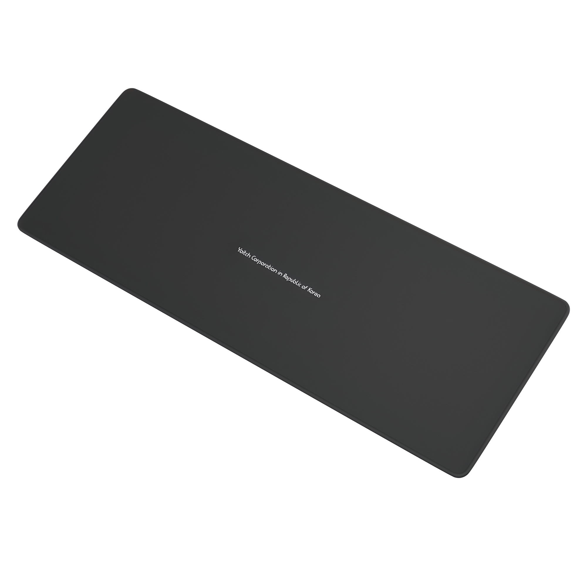
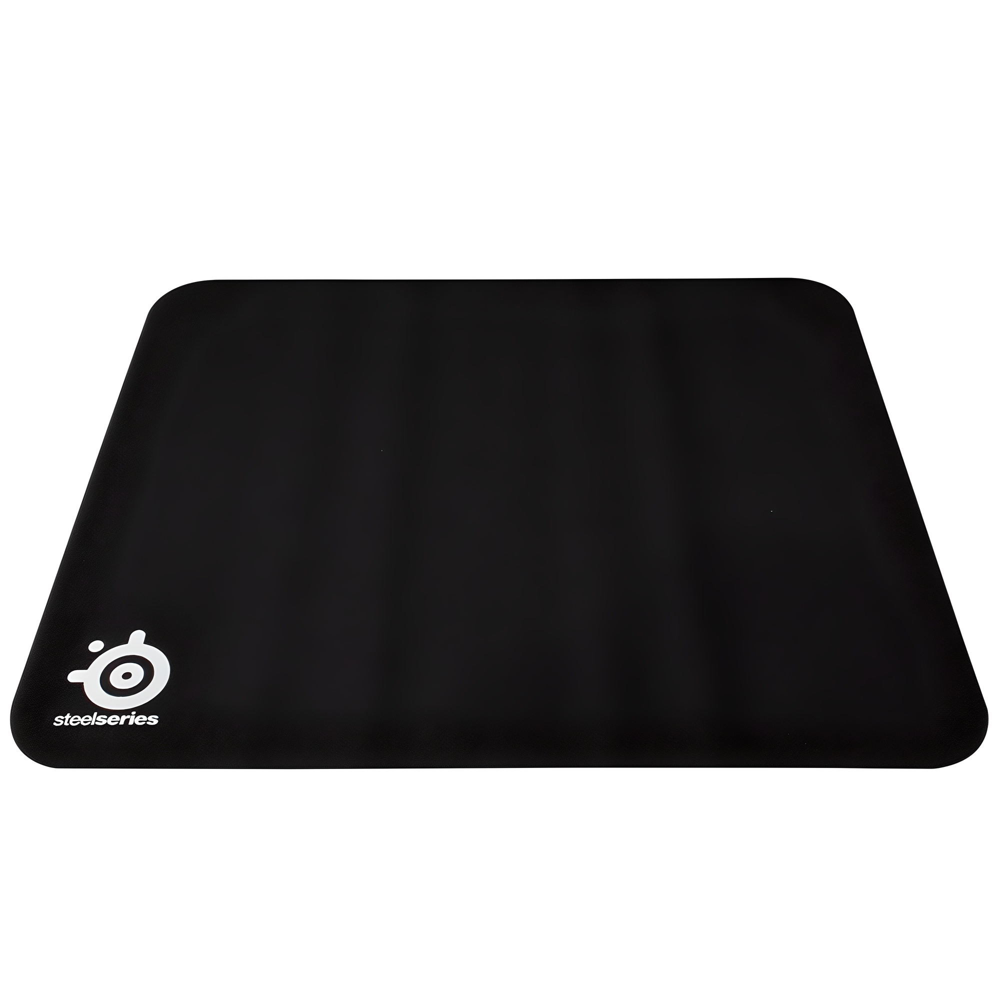
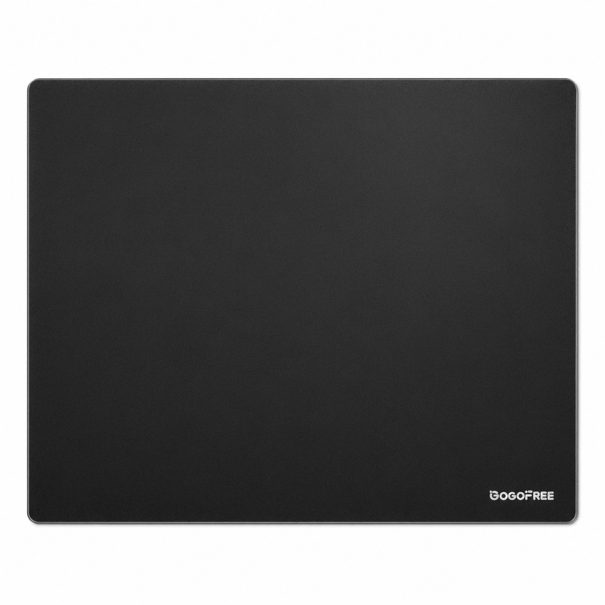

홈 › 제품리뷰 › 디지털/IT
마우스패드, 천 장패드냐 강화유리냐
작성: 생활서식 모음 · 2026-07-28
파트너스 활동의 일환으로 일정액의 수수료를 지급받습니다
🛒 오늘의 쿠팡 특가 보러가기 →
마우스패드, 그냥 아무거나 사면 안 될까요?
핵심은 "크기(장패드)와 재질(천/유리), 컨트롤" 3대 를
"저렴하게 장패드" "게이밍 천패드" "빠른 강화유리"용도별 정답 까지 담았으니
📋 목차
마우스패드, 천 장패드냐 강화유리냐 — 결론 먼저 스펙 비교표: 한눈에 보기 마우스패드 고를 때 봐야 할 4가지 천이냐 강화유리냐, 뭘 사야 할까? 자주 묻는 질문 (FAQ) 결론: 한 줄 요약
마우스패드, 천 장패드냐 강화유리냐 — 결론 먼저
마우스패드는 "크기와 재질(컨트롤/스피드)" 로 갈려요.스틸시리즈 천패드 가 무난합니다. 저렴하게 넓은 장패드면 가성비, 빠른 손맛·내구면 강화유리입니다.
1 가성비·넓은 (가성비 초이스)
가성비

5천원대 장패드
1. 요이치 게이밍 장패드 (800×300)
5천원대 대형 장패드 키보드+마우스 한 번에 넓게 쓰기 좋음
고급 게이밍은 아니어도
추천 대상
넓은 장패드를 저렴하게 원하는 분 키보드+마우스를 한 패드에 올리는 분 데스크를 깔끔하게 정돈하려는 분 장점
5천원대로 부담 없이 대형 장패드를 마련 800×300 크기라 키보드+마우스를 함께 올림 데스크가 깔끔해지고 넓게 쓰기 좋음 단점
프리미엄 원단·강화유리의 정밀 컨트롤·내구는 아님 이 제품은 가성비·넓은 장패드용 입니다. 게이밍 정밀 컨트롤이면 2번 천패드, 빠른 손맛·내구면 3번 강화유리로 가세요. "넓게 저렴하게"면 가성비 최고예요.
한줄 리뷰
"넓은 장패드 하나 저렴하게"면 5천원대로 충분합니다. 데스크가 깔끔해져요. 게이밍 컨트롤·내구면 2·3번을 보세요.
주요 스펙
제품: 요이치 게이밍 장패드 (800×300×5mm) 크기: 대형 장패드 용도: 키보드+마우스 배송: 로켓배송 가격: 약 5,900원 (변동 가능) ※ 실제 스펙·가격과 차이가 있을 수 있습니다
2 게이밍·컨트롤 (베스트 초이스)
베스트

스틸시리즈 천패드
2. 스틸시리즈 Qck 게이밍 마우스패드
게이밍 천패드 정평 정확한 컨트롤 스틸시리즈 브랜드
정평난 게이밍 천패드
추천 대상
게임에서 정확한 컨트롤이 중요한 분 검증된 게이밍 브랜드를 원하는 분 적당한 마찰의 천패드를 선호하는 분 장점
스틸시리즈 Qck는 게이밍 천패드의 스테디셀러로 검증됨 적당한 마찰로 정확한 조준·컨트롤에 유리 표면이 균일해 마우스 인식이 안정적 단점
빠른 손맛·내구·물세척은 강화유리(3번)가 낫다 저렴하게 넓게면 1번, 빠른 손맛·내구면 3번 강화유리입니다. 2번은 "게이밍 컨트롤 천패드" 의 실속 구간 — 게임에 가장 무난합니다.
한줄 리뷰
"게임할 때 조준·컨트롤이 정확했으면"이면 스틸시리즈 Qck가 검증된 선택입니다. 안정적이에요. 빠른 손맛·내구면 3번을 보세요.
주요 스펙
제품: 스틸시리즈 Qck 게이밍 마우스패드 재질: 천패드(컨트롤) 강점: 정확한 컨트롤 · 브랜드 배송: 로켓배송 가격: 약 17,900원 (변동 가능) ※ 실제 스펙·가격과 차이가 있을 수 있습니다
3 빠른 손맛·내구 (프리미엄)
프리미엄

강화유리 XL
3. GOGOFREE 강화유리 마우스패드 (XL)
유리 특유의 빠른 손맛에
추천 대상
빠른 마우스 움직임(로우센스)을 원하는 분 물세척으로 위생·내구를 챙기려는 분 XL 대형 유리 패드를 원하는 분 장점
강화유리라 마우스가 빠르게 미끄러지는 손맛 물세척이 가능해 위생·관리가 편하고 내구가 좋음 XL 대형이라 넓게 쓰고 데스크 감성도 좋음 단점
유리 특성상 취향을 타고, 마우스 발(피트) 마모가 있을 수 있음 저렴하게 넓게면 1번, 게이밍 컨트롤 천패드면 2번이 합리적입니다. 3번은 빠른 손맛·물세척·내구 를 원하는 분에게 어울립니다.
한줄 리뷰
"천패드는 마찰이 답답하고 빠른 손맛을 원한다"면 강화유리가 만족스럽습니다. 물세척도 되고요. 정밀 컨트롤·가성비면 1·2번이 합리적입니다.
주요 스펙
제품: GOGOFREE 강화유리 마우스패드 (XL 40×50) 재질: 강화유리(스피드) 강점: 빠른 손맛 · 물세척 · 내구 배송: 로켓배송 가격: 약 38,980원 (변동 가능) ※ 실제 스펙·가격과 차이가 있을 수 있습니다
스펙 비교표: 한눈에 보기
가격·풍량·무게 중 본인에게 중요한 기준부터 보세요. "최고" 표시는 3제품 중 객관적 1위 값입니다.
← 좌우로 스크롤 →
마우스패드 고를 때 봐야 할 4가지
크기·재질만 챙겨도 "미끄럼·컨트롤" 실패를 막습니다.
1) 크기 — 장패드 vs 일반
장패드: 키보드+마우스를 함께 올려 데스크 정돈일반: 마우스만, 좁은 책상에 적당로우센스(넓게 움직임) 게이밍이면 큰 패드 유리 2) 재질 — 천 vs 강화유리
천패드: 적당한 마찰로 정확한 컨트롤, 게이밍 표준강화유리: 빠른 손맛·물세척·내구, 취향을 탐컨트롤이 중요하면 천, 스피드·위생이면 유리 3) 미끄럼 방지 — 바닥 고정
바닥에 미끄럼 방지가 있어야 패드가 밀리지 않음 얇고 미끄러운 패드는 게임 중 밀릴 수 있음 고무 바닥·적당한 두께가 안정적 4) 두께·마감 — 손목·내구
적당한 두께면 바닥 요철이 덜 느껴짐 가장자리 스티치(박음질)가 있으면 올 풀림 방지 RGB·손목 받침 일체형 등 부가 요소도 참고 천이냐 강화유리냐, 뭘 사야 할까?
컨트롤·스피드 취향과 크기만 정하면 답이 나옵니다.
저렴하게 넓게: 1번 요이치 장패드 → 5천원대게이밍 컨트롤: 2번 스틸시리즈 Qck → 정확빠른 손맛·내구: 3번 강화유리 → 스피드·물세척자주 묻는 질문 (FAQ)
Q1. 장패드가 일반 마우스패드보다 좋은가요? 용도에 따라 다릅니다. 장패드는 키보드와 마우스를 한 패드에 올려 데스크가 깔끔하고, 마우스를 넓게 움직이는 게이머(로우센스)에게 공간이 넉넉해 좋습니다. 일반 마우스패드는 마우스만 올려 좁은 책상에 적당합니다. 데스크 정돈·넓은 게이밍이면 장패드, 공간이 좁거나 마우스만 쓰면 일반 패드로 충분합니다.
Q2. 천패드랑 강화유리 패드, 뭐가 나은가요? 컨트롤과 스피드의 차이입니다. 천패드는 적당한 마찰로 마우스를 정확히 멈추고 조준하기 좋아 게이밍 컨트롤에 유리하고 스테디셀러가 많습니다. 강화유리는 마우스가 빠르게 미끄러지는 손맛과 물세척·내구가 장점이지만 취향을 탑니다. 정확한 컨트롤·에임이 중요하면 천패드, 빠른 움직임·위생을 원하면 강화유리를 고르세요.
Q3. 마우스패드가 자꾸 미끄러지거나 밀려요. 바닥 미끄럼 방지와 두께를 확인하세요. 얇고 바닥이 미끄러운 패드는 게임 중 밀리기 쉽습니다. 바닥에 고무·실리콘 미끄럼 방지가 있고 적당한 두께가 있는 제품이 안정적입니다. 강화유리 패드는 무겁고 바닥 패드가 있어 잘 안 밀립니다. 책상 표면이 미끄러우면 미끄럼 방지가 확실한 제품을 고르는 것이 좋습니다.
Q4. 강화유리 패드가 마우스 발(피트)을 마모시키나요? 천패드보다 마우스 발 마모가 있을 수 있습니다. 유리 표면은 단단해 마우스 발(피트)이 천패드보다 빨리 닳을 수 있어, 마우스 발을 교체용(글라이드)으로 바꾸거나 유리 전용 발을 쓰기도 합니다. 다만 물세척이 가능하고 내구가 좋으며 빠른 손맛이 장점이라 감수하는 분이 많습니다. 마우스 발 마모가 신경 쓰이면 천패드가 무난합니다.
Q5. 게이밍 마우스패드는 사무용으로도 쓸 만한가요? 충분히 쓸 만하고 오히려 편할 수 있습니다. 게이밍 패드는 표면이 균일해 마우스 인식이 안정적이고, 장패드는 키보드까지 올려 데스크가 깔끔해집니다. 사무용으로도 정밀한 커서 움직임과 넓은 공간의 이점을 누릴 수 있습니다. 다만 RGB·과한 게이밍 디자인이 부담되면 무난한 색·디자인의 천 장패드를 고르면 사무 환경에도 잘 어울립니다.
결론: 한 줄 요약
1) 요이치 장패드 — 약 5,900원 / 가성비·넓은. 5천원대, 키보드+마우스.2) 스틸시리즈 Qck — 약 17,900원 / 게이밍·컨트롤. 정평난 천패드.3) GOGOFREE 강화유리 XL — 약 38,980원 / 빠른 손맛. 물세척+내구.이 포스팅은 쿠팡 파트너스 활동의 일환으로, 이에 따른 일정액의 수수료를 제공받습니다.